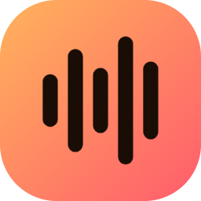

Split any song into vocals, drums, bass, guitar, piano and more — powered by local AI, running entirely on your PC.
Download for WindowsSoundRazer Desktop packages Sound Razor into a native Windows app with a polished UI. Drop in a track (or paste a YouTube link) and it separates the mix into individual instrument stems using AI models such as Demucs, MDX-Net, and RoFormer — all processed locally, nothing uploaded.
Runs in its own window, no browser required, with a modern, redesigned interface.
All AI models run on your computer. No cloud uploads, no accounts, no API keys.
Go further than vocals/drums/bass — separate lead and rhythm guitar parts too.
Paste a YouTube link to download and separate audio directly, no extra tools needed.
Volume, mute, and solo each stem independently while you play back the track.
WAV, MP3, FLAC, M4A, OGG, AAC and more, plus project management for your separated tracks.
The installer is tiny and works offline. First launch asks you to confirm a one-time download of the rest.
Installs to Program Files by default. Windows will prompt for administrator rights; you choose whether to add a desktop icon.
On first launch the app window opens immediately and asks you to consent to downloading FFmpeg and the PyTorch/audio-separation stack (~1.6 GB total).
AI models (~500 MB) download automatically on your first separation. After that, everything runs offline.